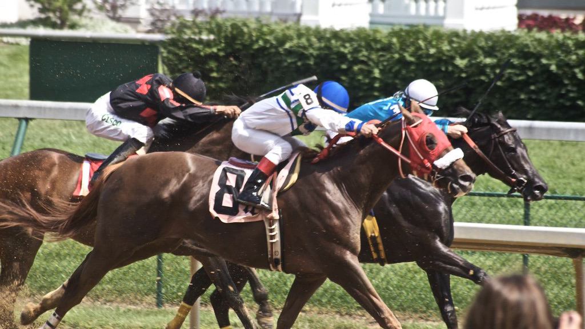
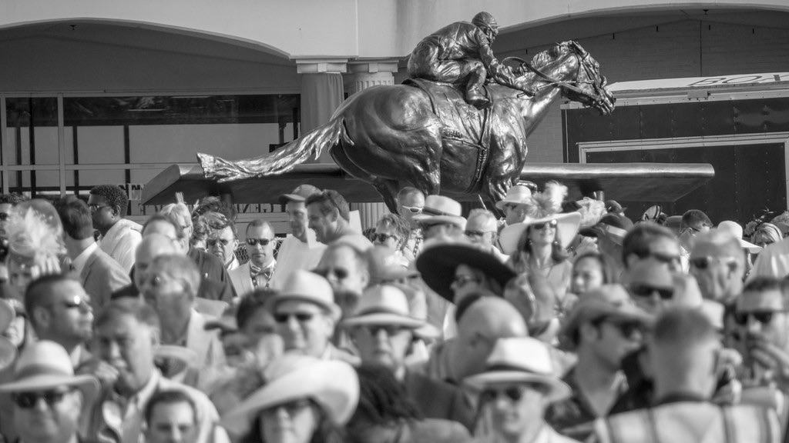
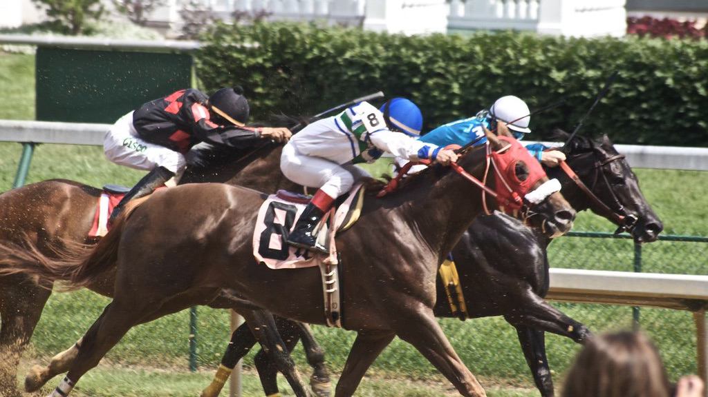
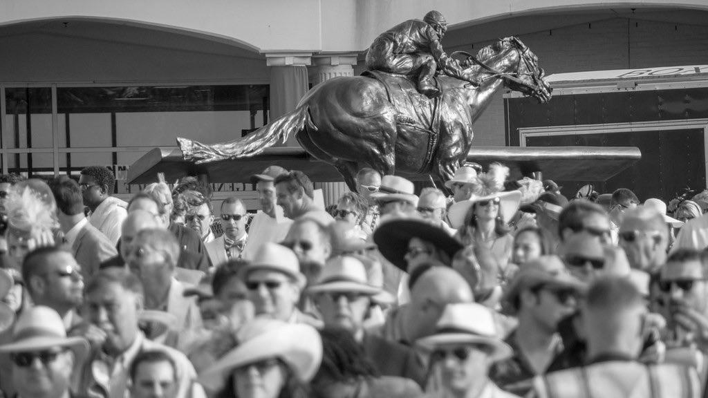

Basics of Betting
I was an avid horserace betting aficienado from the ripe old age of nine to 14. My strategy was built from experimentation with the information provided by previous performance tables in daily racing programs.
The most common and low stakes racing wagers are the
- Win
- Win Place Show, one horse that can place anywhere 1st through 3rd
- Exacta, first two places in order
- Trifecta, first three places in order
Most bets cost $1 to place and although not easy, it's low stakes and high reward to place a
- Superfecta, first four places in order, minimum bet of $0.10
On top of this, any bet made in the exact order of finish, can be made a "box," where the order no longer matters. But these bets are often 2-3x as much to make. Larger chance of winning, more you pay, less you earn.
If you're like my dad and enjoy losing and low-risk equally, you'll place an insane amount of "10-cent Superfectas" on each race, trying to guess tens of combinations for the first four places. So imagine that once you've mastered the art of probability, how much could you win by placing $1 Superfectas?
The lowest-paying $1 Superfecta to be bet on the Kentucky Derby occurred in 1997 on Silver Charm, a horse with 4/1 odds. Betters won $350.00 – a considerable prize back then and today. But in the last 20 years, the Superfecta has paid a median prize of $40,000. The three greatest payouts reached $101,285, $557,000, and $864,253.50 respectively.
As mentioned, this is dependent upon the horse's odds. When the odds are greater, the horse is considered a "longshot," and the payout rises directly and considerably. The next question is, how do you know who to bet on?
Research Questions
To get this data, I performed an HTML webscape on Wikipedia tables from the Kentucky Derby page.
I manually added each horse's triple crown status, the state they were bred in, their odds, starts, wins/places/shows, chances they placed 1st through 3rd in their races, and the superfecta payouts since the late 90s.
Moreover, these are some of the questions I'd like to answer:
- Is the modern racehorse bred to be faster? Since the late 1800s
- Should you bet on a specific jockey or trainer?
- Is Triple Crown status dependent on ____?
Some of the variables include:
- Track Condition
- Time
- Amount of times the jockey has won the derby
- Triple Crown Status
- Bred in x state
- Odds
- Starts
- Win, Place, Show
- WPS ratio
- Superfecta payout


 


